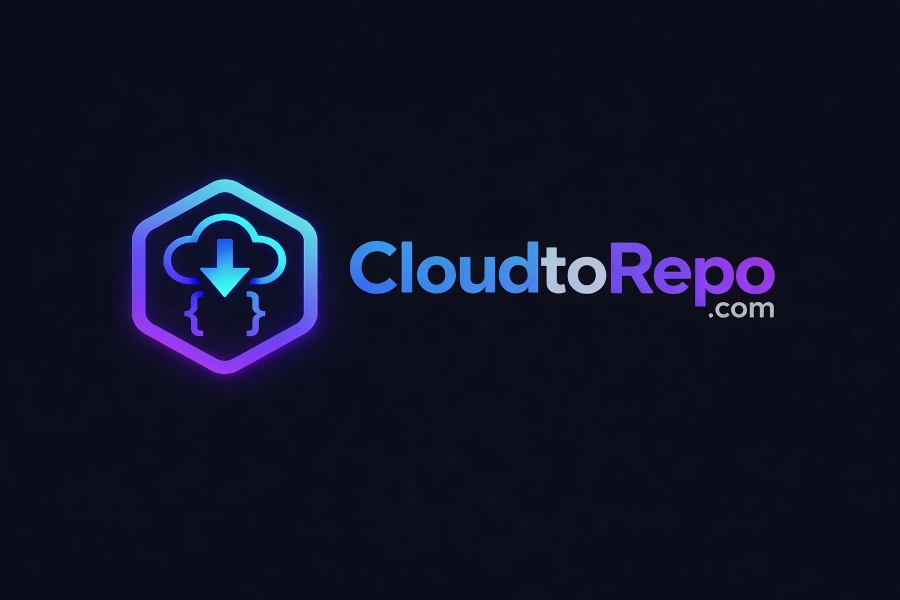

CloudtoRepo scans your AWS account and generates ready-to-use Terraform
import {} blocks,
resource skeletons, and S3 remote-state backends. No click-ops. No paid tools.
Pick a section — each page covers one part of the story in full detail.
The instinct is to think of this as "exporting Terraform." It is not. What you are actually doing is closer to reverse compilation: discovering all resources across accounts and regions, generating Terraform configuration from live infrastructure, reconstructing dependencies, capturing state, and then refactoring everything into something a human can maintain.
Terraformer, the tool most guides recommend, was built by the Waze engineering team
and has not had meaningful maintenance in years. It works, but it predates
Terraform's native import {} blocks and generates output that needs
significant cleanup.
Former2 is primarily a browser-based tool, and the CLI variant is a separate community project with limited coverage. Both are fine for getting a rough baseline, but neither should be your primary strategy in 2026.
Resources reference each other in ways that tooling will not always catch. Some services do not map cleanly to Terraform resources no matter what you do.
IAM is particularly brutal: the relationship between roles, policies, attachments, and instance profiles is rarely clean in a lived-in estate. Accept these rough edges going in and you will be far less surprised.
CloudtoRepo uses the AWS CLI to discover your resources, then writes the Terraform files needed to bring them under version control, with no manual resource hunting required.
Run the script against one region or sweep an entire organisation across multiple accounts and regions.
One import {} block per discovered resource, grouped into per-service directories, ready for Terraform 1.5+.
Run terraform plan -generate-config-out=generated.tf in any service dir. Terraform reads live state and writes fully-populated HCL.
Run drift.sh regularly to catch resources created or deleted outside Terraform. Use --apply to patch imports.tf, then report.sh to generate a Markdown summary.